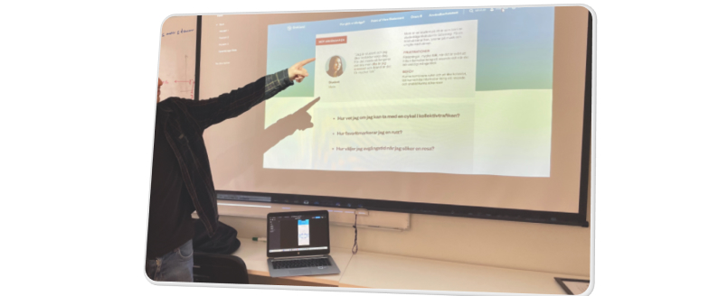

Project Overview
Project Overview
Västtrafik is the provider of public transportation in the city of Göteborg and “Reseplaneraren” is their in-app solution where citizens can plan their travels, buy tickets and view general information. The app is already widely used and solidified within Västtrafik. This project stretches through the entire process of Design Thinking and as students we had to find improvement points in the application and apply UI solutions to a specific demographic based on User Research.
 My Role
My Role
UX/UI Designer
- Conducting Interviews
- Survey and collecting data
- Live user tests
- Prototyping
- Presentation
 Design Process
Design Process
The Design Thinking model contains 5 stages: Empathise, Define, Ideate, Prototype, Test. The process is iterative and stages can be repeated through out the project.
Competitor Analysis and Heuristics
In order to improve something we first need to know what the issues really are and who knows that better than the users?
Gathering Data
By creating a survey in google forms the team gathered quantative data on our users and how they use the app today.
Persona
With the data gathered and compiled we chose a demographic to focus on and created a persona as a baseline for further User Research. The UX persona was a great tool for building empathy and keeping the user behaviour, motivation and goals in the center.
Defining the problem
Scenarios were then formed based on the needs and struggles of the persona and after that live tested on real users. This is where we found and could define the actual problems in the user experience.
Creating Solutions
Now that we know the struggles of our demographic, how do we solve them?
Competitor Analysis
We started by looking at other public transportation-apps for other cities to see if they have constructed their user flow different which was a great way to find initial ideas to implement in our own train of thought.
Brainstorming and Workshop
With the competitor analysis fresh in mind we sat down as a team and started to brainstorm on how to solve the three main issues our User Research resulted in. We used a method called “Crazy 8” to draw out our ideas and later voted on what ideas to go further with and expand more on in our Wireframes.
Solidifying our ideas
The team used Trello to structure sprints and workflow on the prototype, planning out the entire timeframe of what needed to be done to meet the deadline. The first sprint was to create mid-fidelity wireframes and test them on users to verify that our solutions actually made sense and worked on a fundamental level.
User test Mid Fidelity
User feedback and data from tests verified that the user experience had been improved by our implementations. With this concluded we embarked on our next sprint which was to convert our mid-fi wireframes into an hi-fi prototype ready for presentation.
High Fidelity
Since the app already is in use by the public today the assets and colour themes were already set, we just had to build our own iPhone 14 1:1 component library and prototype it in Figma. A massive task but with a very satisfying end result.

Presentation
Lastly the team presented the end result to our stakeholders, the solutions we implemented and the research backing up our design decisions.
Insights and what I've learned
Västtrafik reseplaneraren & ToGo
This was a large project stretching over 5 months and really layed the foundation of not only the Design Thinking model and User Research but UX as a whole. It served as an introduction to gathering data from users and turning that data into a visible change for the better. Furthermore it helped me improve my skills in:
- Figma
- Structuring agile workflows in Trello
- Working in a team with varying skills and needs
- Understanding the communication between organizational teams and stakeholders